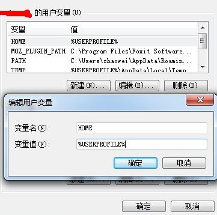

备份
备份好hexo目录下的source文件夹，theme文件夹、node_modules文件夹（里面有你安装的插件，这个可选）和站点配置_config.yml文件（当然如果你硬盘空间够大，备份整个hexo文件夹也可以）。然后把hexo目录里面的东西全部删掉。
备份用户目录下的文件：开始，你的windows用户名，打开你的用户文件夹后备份.ssh文件夹和.gitconfig、_netrc以及_viminfo这三个文件
恢复
安装git、node.js、hexo
cd D:\hexo
hexo init
npm install
安装插件：
npm install hexo-deployer-git –save
npm install hexo-generator-feed –save
npm install hexo-generator-sitemap –save
当然你也可以去事先备份的node_modules文件夹找到你想要安装的插件，然后粘贴到对应位置。
下载主题：
git clone https://github.com/xiangming/landscape-plus.git themes/landscape-plus
复制事先备份的source文件夹，theme文件夹和站点配置_config.yml文件粘贴替换掉D:\hexo里的文件。
和gitcafe建立连接
在gitbash里输入：
git config –global user.email “Your email”
git config –global user.name “Your name”
然后开始，你的windows用户名，打开你的用户文件夹，粘贴并替换事先备份的.ssh文件夹和.gitconfig、_netrc以及_viminfo这三个文件。
然后再输入：
ssh -T git@gitcafe.com
这时会看到显示连接成功信息
注意：如果更换电脑的话，则在输入命令前需要新建一个用户的环境变量（计算机，右键属性，高级系统设置，最下面“环境变量”，好像新建系统环境变量也可以），变量名为HOME，变量值为 %USERPROFILE%。这样才能显示连接成功信息。
